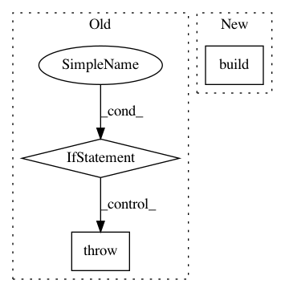

1cda66554188c4504aa94d1bcffd4cef9ee8a997,autokeras/utils.py,,copy_layer,#Any#,60
Before Change
def copy_layer(layer):
new_layer = layer.__class__.from_config(layer.get_config())
if new_layer is None:
raise ValueError("There must be a Dense or Convolution Layer")
return new_layer
def extract_config(network):
After Change
def copy_layer(layer):
print(layer.get_config)
new_layer = layer.__class__.from_config(layer.get_config())
new_layer.build(layer.input_shape)
new_layer.set_weights(layer.get_weights())
return new_layer
In pattern: SUPERPATTERN
Frequency: 3
Non-data size: 3
Instances
Project Name: keras-team/autokeras
Commit Name: 1cda66554188c4504aa94d1bcffd4cef9ee8a997
Time: 2017-12-28
Author: jhfjhfj1@gmail.com
File Name: autokeras/utils.py
Class Name:
Method Name: copy_layer
Project Name: keras-team/keras
Commit Name: 44d558ad7f13251650f40475eef6652df59e4b09
Time: 2016-02-22
Author: Nicholas.Eggert@target.com
File Name: keras/layers/containers.py
Class Name: Graph
Method Name: set_previous
Project Name: keras-team/keras
Commit Name: a637960fab61b66848a36e6a5caf0204c155af01
Time: 2018-05-01
Author: francois.chollet@gmail.com
File Name: keras/engine/sequential.py
Class Name: Sequential
Method Name: add